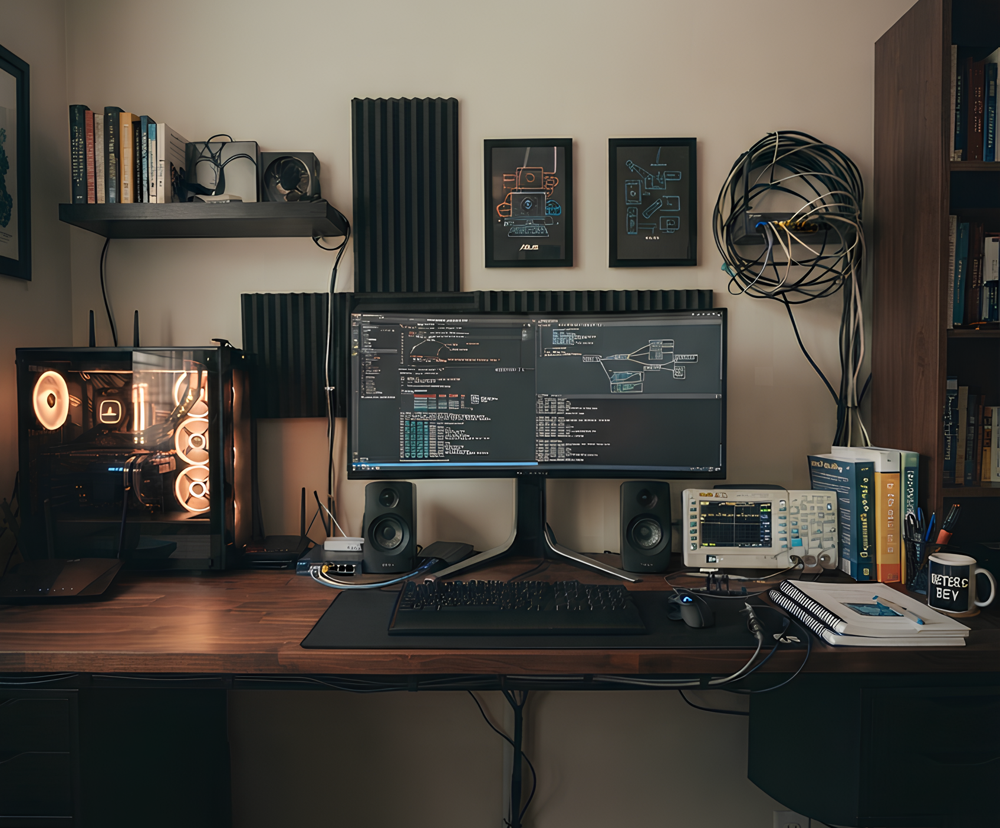

Moje pracovné prostredie
Tento interaktívny pohľad znázorňuje môj pracovný setup, ktorý využívam pri štúdiu sieťových technológií, prenosových systémov a programovaní. Prejdite myšou alebo kliknite na jednotlivé body pre viac informácií.

Sieťový prvok / Router
Zariadenie pre praktické testovanie prenosových systémov a konfiguráciu smerovania v sieťach.
Hlavný monitor
Pracovná plocha pre vývoj webových aplikácií, písanie dokumentácie a sledovanie prednášok.
Mechanická klávesnica
Nástroj na efektívne písanie kódu v angličtine bez diakritiky a správu systémov.
Meracia technika
Využívaná pri analýze signálov pre predmet Analógovo-číslicové spracovanie signálov.
Študijné poznámky
Schémy topológií sietí a výpočty pre digitálne komunikácie a prístupové siete.
Kliknite na niektorý bod na obrázku pre zobrazenie detailov.